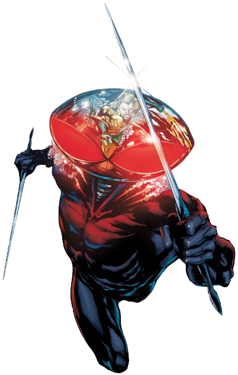

Informações do Arraia Negra
Voltar
Equipes DC

Criação do Arraia Negra
Arraia Negra é um personagem dos quadrinhos da DC Comics, conhecido como um dos principais
inimigos do
Aquaman. Ele foi criado por Bob Haney e Nick Cardy, fazendo
sua primeira aparição em "Aquaman #35" em 1967.
O Personagem Arraia Negra
Arraia Negra, cujo nome verdadeiro é Orm Marius, é o meio-irmão do Aquaman e um dos
vilões mais notórios de
Atlantis. Ele é conhecido por seu ódio intenso pelo Aquaman
e por suas tentativas constantes de usurpar o
trono de Atlantis.
Orm é um mestre manipulador e estrategista, capaz de reunir seguidores e criar alianças para
alcançar seus
objetivos. Ele também é um formidável guerreiro e possui uma armadura avançada,
permitindo-lhe lutar em
igualdade com o Aquaman.
Quadrinhos Importantes do Arraia Negra
O Arraia Negra teve várias histórias importantes nos quadrinhos da DC Comics, explorando sua rivalidade com
o Aquaman e suas ambições de conquistar Atlantis. Aqui estão alguns dos quadrinhos mais relevantes do
personagem:
"Aquaman: The Trench" (2011):
Escrito por Geoff Johns e ilustrado por Ivan Reis, esta história destaca o confronto entre o Aquaman e o
Arraia Negra, apresentando a crueldade e a ameaça que o vilão representa para Atlantis e seus habitantes.
"Aquaman: Throne of Atlantis" (2012-2013):
Nesta saga, escrita por Geoff Johns, o Arraia Negra desempenha um papel central ao liderar um ataque
devastador contra a superfície e Atlantis. A história explora os conflitos entre o Aquaman e seu meio-irmão,
bem como as consequências de suas ações.
"Aquaman: Underworld" (2016):
Nesta história, escrita por Dan Abnett, o Arraia Negra está determinado a assumir o controle de Atlantis,
mergulhando a cidade em uma guerra civil. O enredo revela mais sobre as motivações e ambições do vilão.
Adaptações em Outras Mídias
O Arraia Negra também teve várias aparições em outras mídias, incluindo animações e filmes. Aqui estão
algumas das adaptações notáveis do personagem:
Filme "Aquaman" (2018):
O Arraia Negra é interpretado por Patrick Wilson neste filme de live-action, onde é retratado como o
principal antagonista do Aquaman. Sua rivalidade com o herói é explorada em uma batalha épica pelo trono de
Atlantis.
Desenho Animado "Justice League Unlimited" (2004-2006):
O Arraia Negra é um personagem recorrente nesta série animada, onde suas tramas e confrontos com o Aquaman
são apresentados em vários episódios.
Habilidades do Arraia Negra
O Arraia Negra possui habilidades e recursos que o tornam um adversário formidável para o Aquaman e outros
heróis. Aqui estão algumas de suas principais habilidades:
Força e Agilidade Aprimoradas:
Orm possui força e agilidade sobre-humanas, tornando-o um combatente habilidoso.
Armadura e Equipamentos Avançados:
Ele usa uma armadura especial que o protege de ataques físicos e fornece armas, como tridentes e lanças.
Comando sobre Criaturas Marinhas:
Orm pode se comunicar e comandar criaturas marinhas, permitindo-lhe convocar e controlar tubarões e outras
criaturas do oceano para atacar seus inimigos.
Domínio da Magia Atlante:
Orm possui conhecimento e habilidades em magia atlante, permitindo-lhe realizar feitiços e utilizar a magia
para seus propósitos.
Conclusão
Arraia Negra é um vilão icônico do universo do Aquaman, conhecido por sua rivalidade intensa e suas ambições
de conquistar o trono de Atlantis. Sua complexa relação com o Aquaman, como meio-irmão e adversário
implacável, adiciona camadas à sua história e motivações.
Com habilidades aprimoradas, uma armadura avançada e o poder de comandar criaturas marinhas, o Arraia Negra
se destaca como um dos principais antagonistas do universo DC. Sua presença nas páginas dos quadrinhos e em
diversas adaptações de mídia demonstra sua popularidade duradoura como um dos vilões mais formidáveis do
mundo aquático da DC Comics